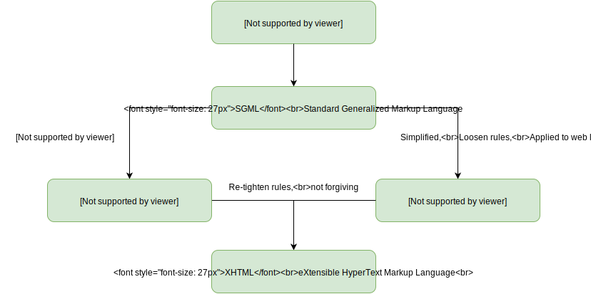

CMPT 165
Introduction to the Internet
and the World Wide Web
Unit1: the Internet and the World Wide Web
Topics
- Define the Internet
- History of the Internet
- Internet Basics
- Protocols
- Surfing the Web
- MIME Types
- Fetching a Web Page
Internet Protocols
How do computers communicate and share information using wired connections?
Definitions
- IP Address
- Port
- Static IP Address
Internet Protocols
- a protocol is an information exchange agreement between the computers
- its a collection of rules
- in other words, the protocol is the communication language between computers
 * image from https://upload.wikimedia.org/wikipedia/commons/6/65/Welcome_differentlangs.png
* image from https://upload.wikimedia.org/wikipedia/commons/6/65/Welcome_differentlangs.png
Internet Protocols
Its good to know
- there might be several protocols that do the same task (like the translations of the word "welcome")
- but there are also protocols that do specific things that others do not
- Port Number is most of the times a numerical designation of the protocol
(e.g. HTTP is typically served on port 80)
Example Protocols
there are many protocols used online, but a few examples will help you understand what they do
Border Gateway Protocol (BGP)
The language with which ISPs communicate!
Simple Mail Transport Protocol (SMTP)
- used by email clients (Outlook, Thunderbird, or a webmail client)
- e.g. used to send an email from from your university email server to Gmail
Secure File Transfer Protocol (SFTP)
- used to copy files between computers (e.g. to transfer a file to a web server so others can see it)
- can only be used when you have an account on the other computer
- you enter a username and password to confirm your identity and then can manage your files
Proprietary Protocols
Let's assume a multilayer online game (e.g. Counter-Strike or Call of Duty)
how does each player instance communicate to the others?
what will each communication message contain?
Other Proprietary Protocols
- Network gaming: already mentioned!
- Instant messaging: iMessage and Skype, others Yahoo!, Google, Facebook.
- Peer-to-peer file transfer: Napster, Apple’s AirDrop, BitTorrent (sort of)
- Streaming: iTunes, Netflix, YouTube, Vimeo, CBC Music
HyperText Transfer Protocol (HTTP)
The protocol of our interest in this course
What is a HyperText ?
“HyperText is text ... with references (hyperlinks) to other text that the reader can immediately access ...[*]”[*] https://en.wikipedia.org/wiki/Hypertext
HyperText Transfer Protocol (HTTP)
“HTTP is an application protocol for distributed, collaborative, and hypermedia information systems.[*] https://en.wikipedia.org/wiki/Hypertext_Transfer_Protocol
HTTP is the foundation of data communication for the World Wide Web. ...[*]”
HyperText Transfer Protocol (HTTP)
- the protocol that is used for the World Wide Web
- whenever your browser requests a page, it does it by contacting a web server and making the request with HTTP
- the server then responds by sending the page, again with HTTP
Surfing the Web
when you click on a link in your web browser, you are making a request for a web page
in the course of your action
- your web browser on your computer is acting as the client for this request
- tools (e.g. search engines or HTML validators) can act as clients as well!
- your web browser contacts a web server to make its request
A Web Request Demonstration
 * image from https://upload.wikimedia.org/wikipedia/commons/thumb/5/57/Scheme_static_page_en.svg/1200px-Scheme_static_page_en.svg.png
* image from https://upload.wikimedia.org/wikipedia/commons/thumb/5/57/Scheme_static_page_en.svg/1200px-Scheme_static_page_en.svg.png
What is the very least piece of information that we need to request a webpage?
Uniform Resource Locator (URL)
URL is used by a web browser (or other tool) to find (locate) a page or other content (a resource) on the web
* image from http://www.cs.sfu.ca/CourseCentral/165/common/study-guide/figures/url.svgName to IP Address Lookup
 * image from http://cdn.ttgtmedia.com/rms/onlineImages/DNS_servers_desktop.jpg
* image from http://cdn.ttgtmedia.com/rms/onlineImages/DNS_servers_desktop.jpg
Multipurpose Internet Mail Extension (MIME) Types
The standard way of indicating the type of the document being sent via HTTP
MIME Type Examples
| Type | Description | Example of typical subtypes |
|---|---|---|
text |
Represents any document that contains text and is theoretically human readable | text/plain, text/html, text/css, text/javascript |
image |
Represents any kind of images. Videos are not included, though animated images (like animated gif) are described with an image type. | image/gif, image/png, image/jpeg, image/bmp, image/webp |
audio |
Represents any kind of audio files | audio/midi, audio/mpeg, audio/webm, audio/ogg, audio/wav |
video |
Represents any kind of video files | video/webm, video/ogg |
application |
Represents any kind of binary data. | application/octet-stream, application/pkcs12, application/vnd.mspowerpoint, application/xhtml+xml, application/xml, application/pdf |
Fetching a Web Resource Using HTTP
Example Request
GET /assets/cmpt165.txt HTTP/1.1
Host: mytesthost.com
User-Agent: The Imaginary Browser
Fetching a Web Resource Using HTTP
Example Response
HTTP/1.1 200 OK
Last-Modified: Mon, 23 Jul 2017 08:41:56 GMT
Content-Length: 36
Content-Type: text/plain
this is my awesome coding experience
now that we have seen how the web pages get from the server to the browser,
we should turn to how they are actually made.
that is what we're going to be spending most of the course learning about
Webpage Creation Technologies
there are three different technologies used to create web pages and they cover three main aspects of a web page
- Content: HTML (HeperText Markup Language)
- Appearance: CSS (Cascading Style Sheets)
- Behaviour: JavaScript
What is a Markup Language ?
“A markup language is a system for annotating a document in a way that is syntactically distinguishable from the text ...[*]”[*] https://en.wikipedia.org/wiki/Markup_language
Generalized Markup Languages
 * idea from http://images.slideplayer.com/33/8232613/slides/slide_17.jpgHyperText Markup Language (HTML)
- is used to describe the content of pages
- its usually what people are talking about when they mention a web page
- it expresses things like this is a paragraph or this is an important word
- it is not concerned about how things look
Cascading Style Sheets (CSS)
- suggests appearances for the pieces of content we have created in HTML
- expresses ideas like all paragraphs should have this font size with CSS
JavaScript
- is a programming language that is embedded in web browsers
- can be used to insert logic and behaviour into web pages
Why we need to separate Content, Appearance, and Behaviour?
- Efficiency: less files to be downloaded in the browser (caching will be possible)
- Faster Development: not everything is written again and again in every page (different people can work on different parts of the page)
- Easier to Maintain: a single change will be made once!